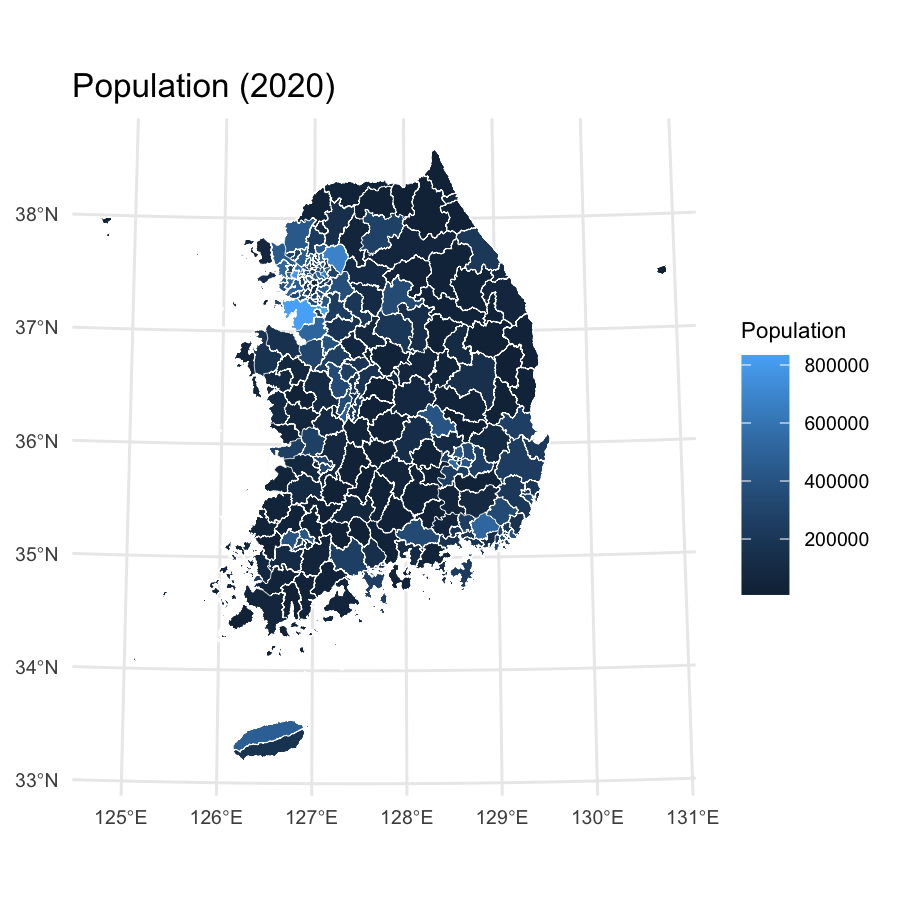
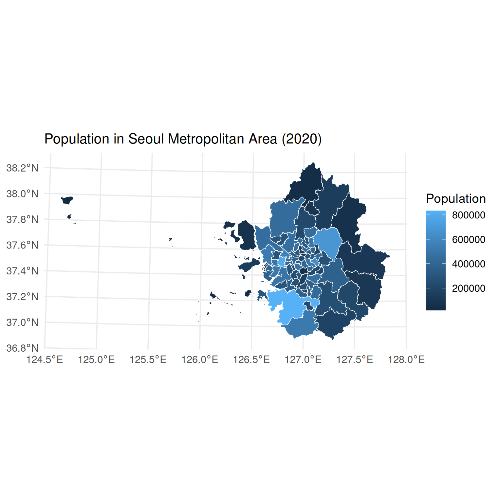
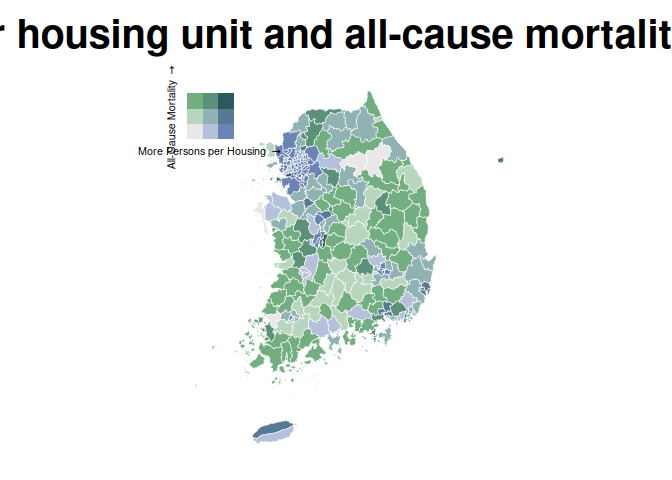

The tidycensuskr package is designed for R users who want to work with South Korean census and administrative boundary data. It aims to provide an easy-to-use interface for population, housing, and socioeconomic statistics linked with geospatial boundaries.
Installation
You can install the released version of tidycensuskr from CRAN with:
# CRAN
install.packages("tidycensuskr")
# R-universe
install.packages("tidycensuskr", repos = "https://sigmafelix.r-universe.dev")To install the development version, remotes::install_github() will suffice.
# Development version from GitHub
rlang::check_installed("remotes")
remotes::install_github("sigmafelix/tidycensuskr")About the data
As of September 2025, this package contains two datasets: Census data (censuskor) and the corresponding geospatial data.
1. Census data
- Sigungu dataset of three census years (2010, 2015, 2020)
- The curated dataset is a long table (i.e., one row per district-year-variable)
anycensus()
- The function
anycensus()allows you to query census data for specific district or province codes and types of data (population, tax, mortality, economy, housing) for three census years (2010, 2015, 2020).
# loading Seoul population data
tidycensuskr::anycensus(codes = "Seoul", type = "population")
#> # A tibble: 25 × 17
#> year adm1 adm1_code adm2 adm2_code type all households_total…¹
#> <dbl> <chr> <dbl> <chr> <dbl> <chr> <dbl>
#> 1 2020 Seoul 11 Dobong-gu 11100 populat… 312878
#> 2 2020 Seoul 11 Dongdaemun-gu 11060 populat… 332796
#> 3 2020 Seoul 11 Dongjak-gu 11200 populat… 378749
#> 4 2020 Seoul 11 Eunpyeong-gu 11120 populat… 458777
#> 5 2020 Seoul 11 Gangbuk-gu 11090 populat… 295304
#> 6 2020 Seoul 11 Gangdong-gu 11250 populat… 440022
#> 7 2020 Seoul 11 Gangnam-gu 11230 populat… 509899
#> 8 2020 Seoul 11 Gangseo-gu 11160 populat… 564114
#> 9 2020 Seoul 11 Geumcheon-gu 11180 populat… 225594
#> 10 2020 Seoul 11 Guro-gu 11170 populat… 394733
#> # ℹ 15 more rows
#> # ℹ abbreviated name: ¹`all households_total_prs`
#> # ℹ 10 more variables: `all households_male_prs` <dbl>,
#> # `all households_female_prs` <dbl>, fertility_total_brt <dbl>,
#> # `fertility_15-19 (simulated)_bp1` <dbl>, `fertility_20-24_bp1` <dbl>,
#> # `fertility_25-29_bp1` <dbl>, `fertility_30-34_bp1` <dbl>,
#> # `fertility_35-39_bp1` <dbl>, `fertility_40-44_bp1` <dbl>, …2. Administrative boundaries
load_district()
- The function
load_district()allows you to get the Si-Gun-Gu levelsffiles for the three census years (2010, 2015, 2020). - The function requires the
tidycensuskr.sfpackage to be installed. Please install it from R-universe usinginstall.packages("tidycensuskr.sf", repos = "https://sigmafelix.r-universe.dev").
# loading boundary sf file: 2020 boundaries are included in this package
data(adm2_sf_2020)
# tidycensuskr.sf::load_districts(year = 2020)Examples
Package vignettes are the first place to look for detailed examples. Below are some quick examples to get you started.
Simple map making
anycensus() will return an analysis-ready data.frame that can be easily merged with the corresponding boundary sf object from load_districts(). Here is a simple example of making maps with population data.
library(tidycensuskr)
#> tidycensuskr 0.2.8 (2026-04-28)
#> Please install the companion data package tidycensuskr.sf to use the district boundaries.
#> install.packages('tidycensuskr.sf', repos = 'https://sigmafelix.r-universe.dev')
library(ggplot2)
library(dplyr)
#>
#> Attaching package: 'dplyr'
#> The following objects are masked from 'package:stats':
#>
#> filter, lag
#> The following objects are masked from 'package:base':
#>
#> intersect, setdiff, setequal, union
library(tidyr)
library(sf)
#> Linking to GEOS 3.12.1, GDAL 3.8.4, PROJ 9.4.0; sf_use_s2() is TRUE
library(biscale)
library(cowplot)
sf_use_s2(FALSE)
#> Spherical geometry (s2) switched off
options(scipen = 100)
# load census data
census_pop_2020 <- anycensus(year = 2020, codes = NULL, type = "population")
#> Using character codes that are convertible to integers. Automatically converting to integers...
census_pop_2020 <- census_pop_2020 |>
rename(population_total = `all households_total_prs`)
# load boundaries
data(adm2_sf_2020)
adm2_2020 <- adm2_sf_2020
# merge boundaries and census data
census_2020_sf <- adm2_2020 |>
left_join(census_pop_2020, by = c("adm2_code" = "adm2_code"))
# plot population data
census_2020_pop <-
ggplot(census_2020_sf) +
geom_sf(aes(fill = population_total), color = "white", size = 0.1) +
theme_minimal() +
labs(
title = "Population (2020)",
fill = "Population"
) +
theme(
plot.title = element_text(size = 12),
axis.text = element_text(size = 7),
legend.text = element_text(size = 7),
legend.title = element_text(size = 8)
)
census_2020_pop
For Seoul Metropolitan Area (including Seoul, Incheon, and Gyeonggi-do), you can use a character vector in codes argument and merge the retrieved data.frame and sf object with inner_join():
census_pop_2020_sma <-
anycensus(
year = 2020,
codes = c("Seoul", "Incheon", "Gyeonggi"),
type = "population"
) |>
rename(population_total = `all households_total_prs`)
census_2020_sf_sma <- adm2_2020 |>
inner_join(census_pop_2020_sma, by = c("year", "adm2_code"))
# plot population data
census_2020_pop_sma <-
ggplot(census_2020_sf_sma) +
geom_sf(aes(fill = population_total), color = "white", size = 0.1) +
theme_minimal() +
labs(
title = "Population in Seoul Metropolitan Area (2020)",
fill = "Population"
) +
theme(
plot.title = element_text(size = 12),
axis.text = element_text(size = 7),
legend.text = element_text(size = 7),
legend.title = element_text(size = 8)
)
census_2020_pop_sma
Bivariate map
Moving on to a complex example, the code below demonstrates to generate a bivariate map with persons per housing unit and all-cause mortality rate.
census_housing_2020 <- anycensus(year = 2020, codes = NULL, type = "housing")
#> Using character codes that are convertible to integers. Automatically converting to integers...
census_housing_2020 <- census_housing_2020 |>
rename(housing_total_units = `housing types_total_cnt`)
census_pop_housing_2020 <- census_pop_2020 |>
left_join(
census_housing_2020 |>
select(adm2_code, housing_total_units),
by = "adm2_code"
) |>
transmute(
adm2_code = adm2_code,
persons_per_housing = population_total / housing_total_units
)
census_mort_2020 <- anycensus(year = 2020, codes = NULL, type = "mortality")
#> Using character codes that are convertible to integers. Automatically converting to integers...
census_mort_2020 <- census_mort_2020 |>
rename(mortality_total = `all causes_total_p1p`)
census_pph_mort_2020 <- census_pop_housing_2020 |>
left_join(
census_mort_2020 |>
select(adm2_code, mortality_total),
by = "adm2_code"
)
# merge boundaries and census data
census_2020_sf <- adm2_2020 |>
left_join(census_pph_mort_2020, by = c("adm2_code" = "adm2_code"))
census_2020_mapbase <-
biscale::bi_class(
census_2020_sf,
x = persons_per_housing,
y = mortality_total,
style = "quantile",
dim = 3
)
# draw a bivariate legend
legend <- bi_legend(
pal = "DkCyan",
dim = 3,
xlab = "More Persons per Housing ",
ylab = "All-Cause Mortality ",
size = 6
)
# plot population data
census_2020_bmap <-
ggplot(census_2020_mapbase) +
geom_sf(
aes(fill = bi_class),
color = "white",
size = 0.1,
show.legend = FALSE
) +
bi_scale_fill(pal = "DkCyan", dim = 3) +
theme_minimal() +
labs(title = "Persons per housing unit and all-cause mortality rate (2020)") +
bi_theme(base_size = 10) +
theme(plot.title = element_text(size = 10))
# combine map with legend
census_2020_bimap <- cowplot::ggdraw() +
cowplot::draw_plot(census_2020_bmap, 0, 0, 1, 1) +
cowplot::draw_plot(legend, 0.7, 0.02, 0.3, 0.3)
census_2020_bimap
Filter nonautonomous districts
detect_adm2_type() can be used to detect nonautonomous districts (i.e., districts that are not independent administrative units but are part of larger cities, per Local Autonomy Act). This is particularly useful when you want to focus on autonomous or nonautonomous districts for analysis.
# detect nonautonomous districts
census_pop_2020 <- anycensus(year = 2020, type = "population")
#> Using character codes that are convertible to integers. Automatically converting to integers...
census_housing_2020 <- anycensus(year = 2020, type = "housing")
#> Using character codes that are convertible to integers. Automatically converting to integers...
census_pop_2020_auto <- detect_adm2_type(census_pop_2020, mode = "atn")
census_pop_2020_nonauto <- detect_adm2_type(census_pop_2020, mode = "non")
unique(census_pop_2020_auto$adm2_code)
#> [1] 33040 34010 37010 38110 35010 37040 31090 31220 31040 34040 33320 37410
#> [13] 34030 36360 35380 31050 21080 22050 24040 26040 23060 21050 34330 38330
#> [25] 37360 37330 34350 32360 37390 32010 33020 25050 22070 22310 36310 34080
#> [37] 33380 11100 21030 22020 25010 24010 23020 26030 11060 31080 32040 11200
#> [49] 21060 33370 11120 11090 11250 23310 36390 11230 32030 21120 11160 31370
#> [61] 38390 38090 11180 21110 34310 21310 37030 38070 35060 31230 35370 33360
#> [73] 36350 36320 34020 37370 32400 38340 31100 37050 31160 35020 37310 31120
#> [85] 11170 36330 31110 11210 11050 31250 31060 24050 36060 37020 37100 34070
#> [97] 23070 38360 36400 21090 38320 36430 38380 31180 38400 32320 32310 34360
#> [109] 32370 31240 36370 31210 35030 35350 32390 36380 36450 35340 33030 39010
#> [121] 35040 32350 33390 35320 33350 36470 38030 11010 21010 22010 25020 23010
#> [133] 11020 26010 11070 11140 23090 38080 36010 36420 35330 37090 36040 21070
#> [145] 22040 24030 26020 23050 38350 35050 31130 34060 11110 33330 23320 31140
#> [157] 31200 31270 32340 31070 38060 21100 32070 38370 37080 21150 29010 21020
#> [169] 22030 25030 24020 23080 34340 11220 11130 39020 11080 11040 37380 31020
#> [181] 34050 31150 36480 32060 11240 35360 36030 22060 31010 21140 34380 32050
#> [193] 38050 31030 38310 37320 31170 37420 26310 37430 36460 35310 32020 11150
#> [205] 32380 31260 31380 38100 32410 37400 31280 31350 36410 37070 37350 11190
#> [217] 21040 33340 36440 37060 32330 37340 21130 23040 36020 34370 31190 11030
#> [229] 25040
unique(census_pop_2020_nonauto$adm2_code)
#> [1] 37040 31220 34040 33320 37410 34030 36360 35380 31050 21080 22050 24040
#> [13] 26040 37012 31023 23060 21050 34330 38330 31191 37360 37330 33044 34350
#> [25] 32360 37390 32010 33020 25050 22070 22310 36310 34080 31092 33380 31101
#> [37] 35012 11100 21030 22020 25010 24010 23020 26030 31042 11060 31080 32040
#> [49] 11200 21060 34011 33370 11120 11090 11250 23310 36390 11230 32030 21120
#> [61] 11160 31370 38390 38090 11180 21110 34310 31192 21310 37030 38070 35060
#> [73] 31230 35370 33360 36350 36320 34020 37370 32400 38340 37050 31160 35020
#> [85] 37310 31120 11170 36330 31110 11210 11050 31250 31060 24050 36060 31012
#> [97] 37020 37100 34070 23070 38360 36400 21090 38320 36430 38380 31180 38400
#> [109] 33043 32320 32310 34360 32370 31240 36370 31210 35030 31103 31104 35350
#> [121] 32390 31011 36380 36450 35340 33030 39010 35040 32350 33390 35320 33350
#> [133] 36470 38115 38030 11010 21010 22010 25020 23010 11020 26010 11070 31022
#> [145] 31041 11140 38113 38114 23090 38080 36010 36420 35330 37090 36040 21070
#> [157] 22040 24030 26020 37011 23050 38350 35050 31130 34060 11110 33330 23320
#> [169] 31140 31200 31013 31270 32340 31070 38060 21100 32070 38370 33041 37080
#> [181] 31091 21150 29010 21020 22030 25030 24020 23080 34012 34340 11220 11130
#> [193] 39020 11080 11040 37380 38112 34050 33042 31150 36480 32060 11240 31021
#> [205] 31193 35360 36030 22060 21140 34380 32050 38050 38111 31030 38310 37320
#> [217] 31170 37420 26310 37430 36460 35310 35011 32020 11150 32380 31260 31380
#> [229] 38100 32410 37400 31280 31350 36410 37070 37350 11190 21040 33340 36440
#> [241] 37060 31014 32330 37340 21130 23040 36020 34370 11030 25040
census_housing_2020_auto <- detect_adm2_type(census_housing_2020, mode = "atn")
census_housing_2020_nonauto <- detect_adm2_type(census_housing_2020, mode = "non")
unique(census_housing_2020_auto$adm2_code)
#> [1] 33040 34010 35010 37010 38110 37040 31090 31220 31040 34040 33320 37410
#> [13] 34030 36360 35380 31050 21080 22050 24040 26040 23060 21050 34330 38330
#> [25] 37360 37330 34350 32360 37390 32010 33020 25050 22070 22310 36310 34080
#> [37] 33380 11100 21030 22020 23020 24010 25010 26030 11060 31080 32040 11200
#> [49] 21060 33370 11120 11090 11250 23310 36390 11230 32030 11160 21120 31370
#> [61] 38390 38090 11180 21110 34310 21310 37030 38070 35060 31230 35370 33360
#> [73] 36350 36320 34020 37370 32400 38340 31100 37050 31160 35020 37310 31120
#> [85] 11170 36330 31110 11210 11050 31250 31060 24050 36060 37020 37100 34070
#> [97] 23070 38360 36400 21090 38320 36430 38380 31180 38400 32320 32310 34360
#> [109] 32370 31240 36370 31210 35030 35350 32390 36380 36450 35340 33030 39010
#> [121] 35040 32350 33390 35320 33350 36470 38030 11010 11020 21010 22010 23010
#> [133] 25020 26010 11070 11140 23090 38080 36010 36420 35330 37090 36040 21070
#> [145] 22040 24030 26020 23050 38350 35050 31130 34060 11110 33330 23320 31140
#> [157] 31200 31270 32340 31070 38060 21100 32070 38370 37080 21150 29010 21020
#> [169] 22030 23080 24020 25030 34340 11220 11130 39020 11080 11040 37380 31020
#> [181] 34050 31150 36480 32060 11240 35360 36030 22060 31010 21140 34380 32050
#> [193] 38050 31030 38310 37320 31170 37420 26310 37430 36460 35310 32020 11150
#> [205] 32380 31260 31380 38100 32410 37400 31280 31350 36410 37070 37350 11190
#> [217] 21040 33340 36440 37060 32330 37340 21130 23040 36020 34370 31190 11030
#> [229] 25040
unique(census_housing_2020_nonauto$adm2_code)
#> [1] 37040 31220 34040 33320 37410 34030 36360 35380 31050 21080 22050 24040
#> [13] 26040 37012 31023 23060 21050 34330 38330 31191 37360 37330 33044 34350
#> [25] 32360 37390 32010 33020 25050 22070 22310 36310 34080 31092 33380 31101
#> [37] 35012 11100 21030 22020 23020 24010 25010 26030 31042 11060 31080 32040
#> [49] 11200 21060 34011 33370 11120 11090 11250 23310 36390 11230 32030 11160
#> [61] 21120 31370 38390 38090 11180 21110 34310 31192 21310 37030 38070 35060
#> [73] 31230 35370 33360 36350 36320 34020 37370 32400 38340 37050 31160 35020
#> [85] 37310 31120 11170 36330 31110 11210 11050 31250 31060 24050 36060 31012
#> [97] 37020 37100 34070 23070 38360 36400 21090 38320 36430 38380 31180 38400
#> [109] 33043 32320 32310 34360 32370 31240 36370 31210 35030 31103 31104 35350
#> [121] 32390 31011 36380 36450 35340 33030 39010 35040 32350 33390 35320 33350
#> [133] 36470 38115 38030 11010 11020 21010 22010 23010 25020 26010 11070 31022
#> [145] 31041 11140 38113 38114 23090 38080 36010 36420 35330 37090 36040 21070
#> [157] 22040 24030 26020 37011 23050 38350 35050 31130 34060 11110 33330 23320
#> [169] 31140 31200 31013 31270 32340 31070 38060 21100 32070 38370 33041 37080
#> [181] 31091 21150 29010 21020 22030 23080 24020 25030 34012 34340 11220 11130
#> [193] 39020 11080 11040 37380 38112 34050 33042 31150 36480 32060 11240 31021
#> [205] 31193 35360 36030 22060 21140 34380 32050 38050 38111 31030 38310 37320
#> [217] 31170 37420 26310 37430 36460 35310 35011 32020 11150 32380 31260 31380
#> [229] 38100 32410 37400 31280 31350 36410 37070 37350 11190 21040 33340 36440
#> [241] 37060 31014 32330 37340 21130 23040 36020 34370 11030 25040